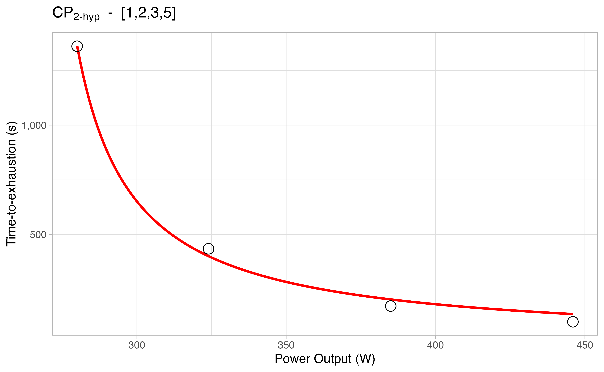

cyclingtools.Rmd
Please, note that currently cyclingtools only provide critical power analyses. However, more functionality is planned, such as training impulse analyses (iTRIMP, bTRIMP, eTRIMP, luTRIMP).
If you have a suggestion, feel free to open an issue.
For performing critical power analysis, the general critical_power() function was created. There are basically two main options in there: you can choose which model to fit (i.e., CP 3-hyp, CP 2-hyp, CP linear, and CP 1/time), and you can also choose whether to produce an analysis with all the combinations of the time-to-exhaustion trials provided.
Let’s look at the main functionality:
library(cyclingtools) simple_results <- critical_power( .data = demo_data, power_output_column = "PO", time_to_exhaustion_column = "TTE", method = c("3-hyp", "2-hyp", "linear", "1/time"), plot = TRUE, all_combinations = FALSE ) simple_results #> # A tibble: 4 x 12 #> method data model CP `CP SEE` `W'` `W' SEE` Pmax `Pmax SEE` R2 RMSE #> <chr> <lis> <lis> <chr> <chr> <chr> <chr> <chr> <chr> <chr> <chr> #> 1 3-hyp <tib… <nls> 260.3 3.1 2740… 4794 1003… 834.7 0.99… 37.14 #> 2 2-hyp <tib… <nls> 262.2 1.6 2417… 1888.9 <NA> <NA> 0.997 34.7 #> 3 linear <tib… <lm> 265.5 3 2096… 2247.9 <NA> <NA> 0.99… 3149… #> 4 1/time <tib… <lm> 273.8 6.2 1778… 1160 <NA> <NA> 0.98… 9.05 #> # … with 1 more variable: plot <list>
In the above example, we chose to fit critical power on all the available methods, but you can also just choose one or two:
critical_power( .data = demo_data, power_output_column = "PO", time_to_exhaustion_column = "TTE", method = c("3-hyp", "2-hyp"), plot = TRUE, all_combinations = FALSE ) #> # A tibble: 2 x 12 #> method data model CP `CP SEE` `W'` `W' SEE` Pmax `Pmax SEE` R2 RMSE #> <chr> <lis> <lis> <chr> <chr> <chr> <chr> <chr> <chr> <chr> <chr> #> 1 3-hyp <tib… <nls> 260.3 3.1 2740… 4794 1003… 834.7 0.99… 37.14 #> 2 2-hyp <tib… <nls> 262.2 1.6 2417… 1888.9 <NA> <NA> 0.997 34.7 #> # … with 1 more variable: plot <list>
The nice thing about the retrieved results is that the model is saved as well. So you can further explore it if you would like to. For example, using the base R function summary():
simple_results %>% dplyr::slice(1) %>% dplyr::pull(model) %>% .[[1]] %>% summary() #> #> Formula: TTE ~ (AWC/(PO - CP)) + (AWC/(CP - Pmax)) #> #> Parameters: #> Estimate Std. Error t value Pr(>|t|) #> AWC 27409.920 4794.043 5.717 0.029255 * #> CP 260.267 3.097 84.038 0.000142 *** #> Pmax 1003.833 834.679 1.203 0.352171 #> --- #> Signif. codes: 0 '***' 0.001 '**' 0.01 '*' 0.05 '.' 0.1 ' ' 1 #> #> Residual standard error: 37.14 on 2 degrees of freedom #> #> Number of iterations to convergence: 6 #> Achieved convergence tolerance: 1.49e-08
Or the broom::tidy() function:
simple_results %>% dplyr::slice(1) %>% dplyr::pull(model) %>% .[[1]] %>% broom::tidy() #> # A tibble: 3 x 5 #> term estimate std.error statistic p.value #> <chr> <dbl> <dbl> <dbl> <dbl> #> 1 AWC 27410. 4794. 5.72 0.0293 #> 2 CP 260. 3.10 84.0 0.000142 #> 3 Pmax 1004. 835. 1.20 0.352
The above can also be more quickly achieved with the following:
simple_results %>% dplyr::select(method, model) %>% dplyr::rowwise() %>% dplyr::mutate(tidy_model = broom::tidy(model) %>% list()) %>% tidyr::unnest(cols = tidy_model) #> # A tibble: 9 x 7 #> method model term estimate std.error statistic p.value #> <chr> <list> <chr> <dbl> <dbl> <dbl> <dbl> #> 1 3-hyp <nls> AWC 27410. 4794. 5.72 0.0293 #> 2 3-hyp <nls> CP 260. 3.10 84.0 0.000142 #> 3 3-hyp <nls> Pmax 1004. 835. 1.20 0.352 #> 4 2-hyp <nls> AWC 24175. 1889. 12.8 0.00103 #> 5 2-hyp <nls> CP 262. 1.58 166. 0.000000485 #> 6 linear <lm> (Intercept) 20961. 2248. 9.32 0.00261 #> 7 linear <lm> TTE 265. 3.00 88.6 0.00000317 #> 8 1/time <lm> (Intercept) 274. 6.16 44.4 0.0000251 #> 9 1/time <lm> I(1/TTE) 17784. 1160. 15.3 0.000603
The all_combinations argument let you decide whether to perform multiple fits from all the possible combinations of trials provided:
combinations_results <- critical_power( .data = demo_data, power_output_column = "PO", time_to_exhaustion_column = "TTE", method = c("3-hyp", "2-hyp", "linear", "1/time"), plot = TRUE, all_combinations = TRUE ) combinations_results #> # A tibble: 74 x 13 #> index method data model CP `CP SEE` `W'` `W' SEE` Pmax `Pmax SEE` R2 #> <chr> <chr> <lis> <lis> <chr> <chr> <chr> <chr> <chr> <chr> <chr> #> 1 [1,2… 3-hyp <tib… <nls> 260.3 3.1 2740… 4794 1003… 834.7 0.99… #> 2 [1,2… 2-hyp <tib… <nls> 262.2 1.6 2417… 1888.9 <NA> <NA> 0.997 #> 3 [1,2… linear <tib… <lm> 265.5 3 2096… 2247.9 <NA> <NA> 0.99… #> 4 [1,2… 1/time <tib… <lm> 273.8 6.2 1778… 1160 <NA> <NA> 0.98… #> 5 [1,2… 3-hyp <tib… <nls> 246.5 6.2 4269… 7655 594.8 70.2 0.99… #> 6 [1,2… 2-hyp <tib… <nls> 261.2 4.7 2481… 3690.8 <NA> <NA> 0.99… #> 7 [1,2… linear <tib… <lm> 268.8 5.9 1997… 2877.4 <NA> <NA> 0.99… #> 8 [1,2… 1/time <tib… <lm> 278.4 7.9 1719… 1338.8 <NA> <NA> 0.98… #> 9 [1,2… 3-hyp <tib… <nls> 255 1.9 3646… 3328.4 626.9 63.7 0.99… #> 10 [1,2… 2-hyp <tib… <nls> 261.7 2.2 2494… 2882.2 <NA> <NA> 0.99… #> # … with 64 more rows, and 2 more variables: RMSE <chr>, plot <list>
You can also check the plots of each estimation in case you set plot = TRUE:

Please, note that critical_power() is a general function that makes your life easier. However, you can also call the individual functions of each method:
method_3_hyp() = 3-parameter hyperbolic modelmethod_2_hyp() = 2-parameter hyperbolic modelmethod_linear() = linear modelmethod_1_time() = 1/time linear modelExample:
method_3_hyp( .data = demo_data, power_output_column = "PO", time_to_exhaustion_column = "TTE", plot = TRUE ) #> # A tibble: 1 x 11 #> data model CP `CP SEE` `W'` `W' SEE` Pmax `Pmax SEE` R2 RMSE plot #> <list> <lis> <dbl> <dbl> <dbl> <dbl> <dbl> <dbl> <dbl> <dbl> <lis> #> 1 <tibb… <nls> 260. 3.1 27410. 4794 1004. 835. 0.998 37.1 <gg>
All of these functions can be performed in Critical Power Dashboard